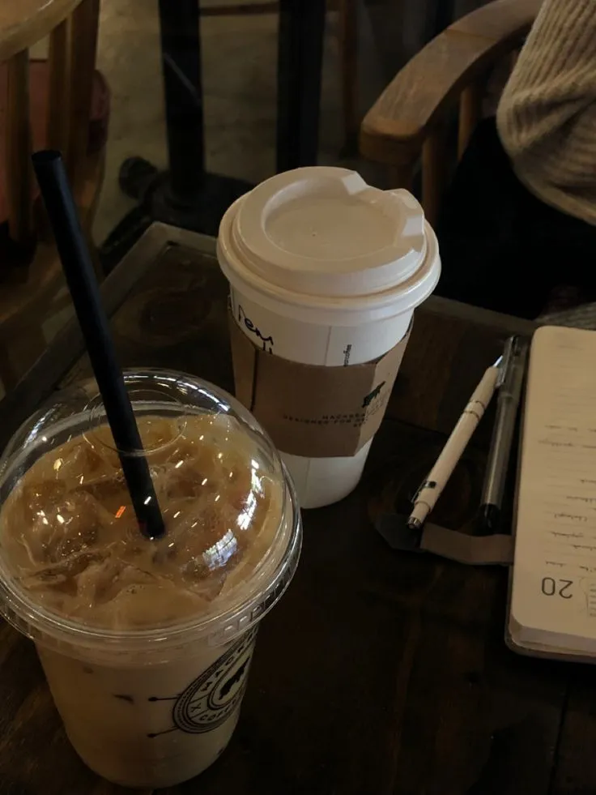

Web developer crafting interfaces that feel considered — small details, slow craft, work that earns its place.
Read MoreAbout Me
A developer with a builder's instinct.
I'm Faiz, a Bachelor of Computer Science graduating with a 3.85 / 4.00 GPA—but the part I care about most is shipping. I work where institutional processes meet modern interfaces.
Most of what I build lives in the seam between an organisation that needs to move faster and a stack that needs to keep up. Laravel for the backbone, JavaScript for the polish, and a healthy bias toward the kind of details users notice but never name.
3.85
GPA · BSc CS
3+
Shipped projects
1+yr
Professional

